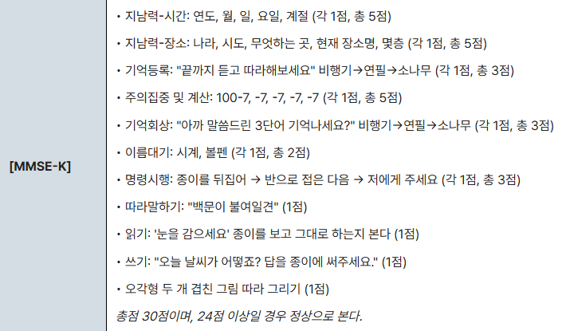

10. 기억력 저하
원인 | |||
주관적 기억력 저하 | 정상노화 | ||
경도인지장애 |
| ||
일차성 치매 | 알츠하이머 치매 | ||
이차성 치매 | 뇌혈관, 파킨슨병, 알코올 등 | ||
심인성 기억저하 | 가성치매(우울장애), 해리성 기억상실 등 | ||
평가목표 1) 기억력 장애를 호소하는 환자의 인지기능을 객관적으로 평가 2) 기억력이 저하되는 대표적 질환을 감별하며, 진단 및 치료 계획을 수립할 수 있는가 | |||
구체적인 성과 | |||
병력 청취
| 기억력 저하의 정도 파악 | 발생 시기 및 경과: 서서히(알츠하이머) vs 갑자기/계단식 악화(혈관성 치매) 일상생활 지장 여부(ADL): 경도 인지장애 vs 치매 지남력 저하: 시간, 장소, 사람에 대한 인지 상태 | |
| 기억력 저하의 원인 감별 | 동반 증상을 통해 원인 질환 감별하기 : 심혈관계 위험인자, 환시, 성격 변화, 보행장애, 우울, 약물력, 추위불내성 등 | |
신체 진찰 | 기본적인 인지기능검사 시행 | MMSE 시행 경도 인지장애 감별 | |
| 원인질환에 따른 신경학적 진찰 | 보행 분석: 정상압 수두증, 루이소체 치매/파킨슨병 국소 신경학적 징후: 혈관성 치매 | |
| 원인질환에 따른 정신상태 | 우울증 평가(가성치매), 성격 변화(전두측두엽 치매), 의식 및 주의력(섬망) | |
진단 | 신경심리검사 및 인지기능평가 | 스크리닝 검사 | MMSE |
|
| 종합 신경심리검사 | 인지저하 확인 시 SNSB/CREAD-K |
|
| 정신 상태 검사 | Beck 우울척도 검사 |
| 원인감별을 위한 검사 : 영상 및 혈액 검사 | 구조적 이상 확인 | Brain CT/MRI (뇌경색, 해마 위축) |
|
| 기능적 이상 확인 | Brain PET (뇌내 대사 저하 확인) |
|
| 가역적 원인 배제 | TFT(갑상샘 저하증) Vti B1(코르사코프 증후군) |
치료 | 원인별 맞춤 치료 | 알츠하이머 치매 | Donepezil, Memantine |
|
| 혈관성 치매 | 항혈소판제, 위험인자 교정 |
|
| 레비소체 치매 | 인지기능개선제, 항정신병 약물(prn) |
|
| 전두측두엽 치매 | SSRI, 항정신병 약물 |
| 가역적 원인 및 급성 조치 | 정상압 수두증 | VP shunt로 뇌척수액 배출 |
|
| 가성치매 | SSRI |
|
| 섬망 | 유발 원인 치료, haloperidol |
|
| 코르사코프 증후군 | Thiamine |
환자 교육 | 환자/보호자 교육 | (보호자 있는 경우) 보호자에게도 관리 원칙 및 치료 계획/목표 설명하기 | |
질환 | 질환 설명 | 병력청취 | 신체진찰 | 검사 | 치료 | |
치매 | 알츠하이머 0+1 | 뇌에 비정상 단백질 쌓임 | 서서히 진행, 최근일/약속 기억 못함 오래된 기억은 잘 유지 | 단어찾기 X 시간지남력 X | 뇌 MRI, 뇌 PET 정신상태검사 신경심리검사 | 인지기능개선제 (donepezil, memantine) 인지재활치료, 가족교육 |
| 경도 인지장애 4+1 | 기억력이 약해지지만 일상생활은 유지되는 치매 전 단계 | 일상생활 지장 없는 수준 (향후 알츠하이머 진행 가능) |
| 정신상태검사 신경심리검사
| 규칙적 운동 약물치료는 근거부족 |
| 혈관성 치매 1+1 | 뇌졸중 등 뇌혈관 손상으로 기억력과 사고력↓ | 갑작스런 병력 계단식 악화 고혈압/뇌졸중 병력 국소 신경학적 증상 |
| 뇌 CT/MRI | 위험인자 조절 항혈소판제 인지기능 개선제
|
| 전두측두엽 치매 | 전두/측두엽 손상되어 발생 | (전두) 성격변화/충동적 (측두) 언어이해↓/실어증 | 신경학적 검사 | 뇌 MRI 뇌 PET | SSRI, Antipsychotics 언어치료 |
| 레비소체 치매 | 뇌세포 안 단백질 덩어리 쌓여 환각/기억력장애 | 인지기능 기복 환시 파킨슨증후군 | 신경학적 검사 종종걸음 Gait, 경축 | 뇌 MRI 뇌 PET | 인지기능개선제 antipsychotics(환시) |
정신 | 가성치매 1+1 | 우울증으로 집중/기억력 떨어짐 | 우울, 의욕저하, 수면장애 | MMSE 시행 시 귀찮/모른다함 | Beck 우울척도검사 정신상태검사 | 항우울제(SSRI, TCA) |
| 섬망 | 급성 뇌기능 장애로 의식/주의/기억 나빠짐 | 갑자기, 최근 수술/입원, 하루 중 기복 있음 인지기능 저하 동반 가능 |
|
| 교정 가능한 원인치료 Haloperidol |
| 코르사코프 증후군 | 만성 알코올 중독으로 vitB 결핍 | 만성알코올중독 최근 기억 X, 작화증 |
|
| Thiamine 영양 공급 |
뇌 | 정상압 수두증 | 뇌척수액이 축적되어 보행장애와 기억력 저하 | 보행장애: 총총, 자세불안 요실금 인지기능장애 |
| 뇌 CT/MRI | 뇌실복막강 션트 |
내분비 | 갑상샘 저하증 | 호르몬 부족으로 대사/집중력/기억력 감소 | 추위불내성, 체중 증가 의욕저하, 변비 |
| TFT | Levothyroxine |
기타
| 약물 사용 |
| 최근 새로 약 복용 (스테로이드, 항콜린제) |
|
| 약물 중단 |
| 외상 | 머리 외상으로 뇌세포 손상 | 머리 다침 |
|
|
|
추가 | 일과성 기억장애 2 | 일시적인 '기억회로의 과부하' | 병원에 오게 된 특정 상황이 있음 똑같은 질문을 반복 다른 증상 X. 기억장애만 | MRI 해마에 작은 점 | 뇌 MRI | 휴식 |
| 해리성 기억장애 | 마음이 스스로를 보호하기 위해 기억 차단 | 정신적 외상력 갑작스런 소실/회복 우울, 불안, 스트레스 |
|
| 인지치료 |
O | 언제 갑/서 상황: 특별한 상황/사건이 있지는 않았나요? -사고/지인의 죽음/일과성 기억상실 사건 등 |
L | - |
D | 지속 🙂 좋아지기도 하나요? (좋아졌다 나빠졌다 하나요?) -r/o 루이소체 치매 |
Co | 점점 심해지는지 |
Ex | 이전 경험 – 치료 |
C | 개방형 “어떤 걸 기억력이 떨어진 것이라고 말씀하시는 건가요?” [양상] 최근일(AzD)/옛날일: 아침밥/어디서태어남/약속기억 [정도] 돈 가스 단 길 일상생활 지장 –> 가스불/현관문 깜빡? 언어) 단어 안떠오름/ 상대 말 이해못함 계산) 돈 계산/관리 공간) 길 잃기 |
A | 개방형: “다른 불편한 곳은 없으세요? 네. 그럼 제가 몇가지 자세하게 확인해보겠습니다.” 전신)발열/오한/체중변화/피로 혈관치매) 두통/시야/말어눌/팔다리 힘빠짐 전측두엽치매) 성격변화 루이소체치매) 환시/파킨슨 증상 파킨슨) 양손떨림/행동 느려짐/보행시 상체숙임/보폭감소 -걷는데 이전보다 불편하거나 달라진건 없으세요? 수두증) 요실금 갑상선기능저하)추위불내성/변비 가성치매) 우울/불안 (우울/의욕감소/불안/초조/식욕변화/수면장애/죄책감/자살사고) |
F | 개방형: “증상이 어떨 때 좀 괜찮아지고/심해지나요?” 스트레스 |
E | 건강검진 |
외 | 외상 – 머리 다친 적 수술 – 최근 수술 -r/o 섬망 |
과 | 기저질환 (HTN/DL/DM/Tb/Hep) -혈관치매 정신과 진료 -r/o 가성치매 뇌수막염/뇌염 |
약 | 복용 중인 약물 정신과 약 스테로이드 -r/o 가성치매 |
사 | 기본 : 음주/흡연/커피/직업/스트레스/식습관/운동 음주 - 과음 최종 학력 물어보기 |
가 | 비슷한 증상 치매/기억장애 뇌혈관질환 |
여 | LMP/규칙적/폐경 |
시간 (+1) | 5 | 년도/월/일/요일/계절 |  | |
장소 | 5 | 국가/시/뭐하는곳/장소이름/층 |
| |
기억등록 | 3 | 비행기/연필/소나무 환자가 바로 한번에 3개 말하도록 |
| |
100-7 (+2) | 5 | 36925 |
| |
기억회상 | 3 | 비행기/연필/소나무 |
| |
물건이름 (+1) 읽고행동
| 2 | 볼펜/종이 |
| |
| 1 | 눈을 감으시오 |
| |
최종학력 확인 – 대졸이상(만점 아니면 치매배제 X), 무학/초등(경도인지장애 수준도 정상 가능) 혈관치매, 전측두 치매는 MMSE가 상대적으로 높을 수 있음 | ||||
[20~24]: 정상 [16~19]: 경도인지장애= 치매 가능성 의심 [15 미만]: 치매가능성 높음 | [24~30]: 정상 [20~23]: 경도인지장애= 치매 가능성 의심 [19-10]: 중등도 치매 [0-9]: 중증 치매 | |||
신체진찰 (생략, 축소할게 딱히 없는 듯 합니다..) | |
기본 | V/S -눈-입-목(경동맥 청진)-사지-다리 |
| (침대에 걸터앉히고) |
뇌신경 | 1 동공반사 2 안구운동검사- 좀 천천히 8방향 3 감각 검사: 눈 감고 검사!! 🡺 2가지(휴지+해머) – 느껴지시나요+동일한가요 4 운동검사 : 눈 꽉 감아보세요 -> 눈 벌려지나 만져보기 이 꽉 깨물어보세요 -> 턱근육 만져보기 +) 볼빵빵/ 이 해보세용/ 이마 주름 만들어보세용 |
상하지 | 사지 감각, 운동, DTR → r/o 혈관치매 – 어느정도로 할지 같이 정하기 탁자위에 올리고 떨림 + rigidity r/o 레비소체/PD |
보행 | 걸어갔다오세요 (보조해주며) r/o 혈관/레비소체/PD/정상압 |
시작: 걱정되는 부분? / 마지막: 이해안되거나 궁금?
진단 치료 교육 | 기본 | 영상검사 뇌 CT, PET-CT, 혈액검사(갑상선) 신경심리검사 | 인지기능 개선 약물 | |
|
| 혈관성 | MRI MRA | 뇌졸중 재발 방지 : 기저질환/항혈소판/항응고 이상행동-> 항정신성 약물 |
|
| 섬망 | - | <기저질환치료!!>+ 사진/시계/달력+ 친근한 사람 간병+적절자극 |
|
| 코르사코프 | - | 비타민B 보충 |
|
| 가성치매 | 우울척도검사, 정신상태검사, 신경심리검사 | 우울증 약물, 상담 치료시 기억력 호전 |
|
| 정상압수두증 | MRI | 뇌척수액 빼서 증상 나아지면 진단 가능, 배로 빼주는길 만들어주면 좋아질 것 |
| (안심/진단검사/치료응급/회피교정/검진접종) [안심] (경도인지장애) 알츠하이머 치매로 진행 가능, 치료 빨리 시작할수록 좋다
[진단검사치료] -의심되는 질환 설명- 검사: 영상검사 통해 치매관련된 뇌 기능 이상, 막힌 곳 확인, 혈액검사 통해 갑상선수치 확인 치료: 인지기능 개선약물 “치매 가능성 낮으니 너무 걱정 ㄴㄴ” “당분간 충분한 휴식”
[응급] 혈관성 치매 : (응급) 머리가 너무 아프거나, 의식 떨어지고, 마비, 힘빠짐 증상 시 내원
[회피/교정] (보호자 있다면 보호자에게 아래에 대해 신경써달라고 하기) 기억력을 보존하는 가장 좋은 방법은, 계속해서 뇌에 긍정적 자극을 주는 것입니다. 취미만들기 : 책을 읽거나 규칙적으로 운동을 하는 등 본인이 즐길 수 있는 취미 사람만나기 : 사람은 혼자 있으면 우울해지고 마음에 병이 생기기 쉬움 메모 습관 + 규칙적 생활(정해진 일과 주고 까먹지 않게)
[만성질환 관리] 약 잘드셔요 사 - 술/담/운동/식사 과 - 고혈압/당뇨/심장병/고지혈증관리 – 특히 혈관성 치매
보호자 있다 : [보호자 격려] (공감) 환자 본인도 힘들지만, 보호자분도 많이 힘드실거 압니다. (주의할 점) 보호자분께서 스트레스 많이 받거나, 몸이 망가지시는 일이 없도록 (해결책) 같이 돌볼 가족이 있으면 역할을 분담 치매지원센터있고, 검사+치료비 지원+기타 활동 지원사업 있으니 연계 (돌보기 어려우면) 사회복지사 방문 치료도 가능 – 연계해 드려요? 보호자 없다 : [지원사업 교육] 치매지원센터 있고, 검사+치료비 지원+기타 활동 지원사업 있으니 연계 사회복지사 방문 치료도 가능 – 연계해 드려요?
[검진/접종] | |||
PPI | 궁금하신 점 있으실까요? | |||
cf) [주요 우울장애] 5가지 매일 2주
①종일우울 / 흥미저하
②먹고/잠자는 문제 / 피로
③불안,멍해짐 / 집중력저하,건망증
④과한죄책감 / 자살생각,시도,계획